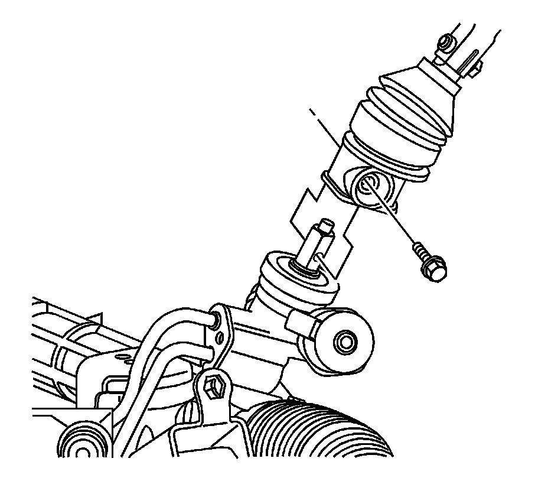
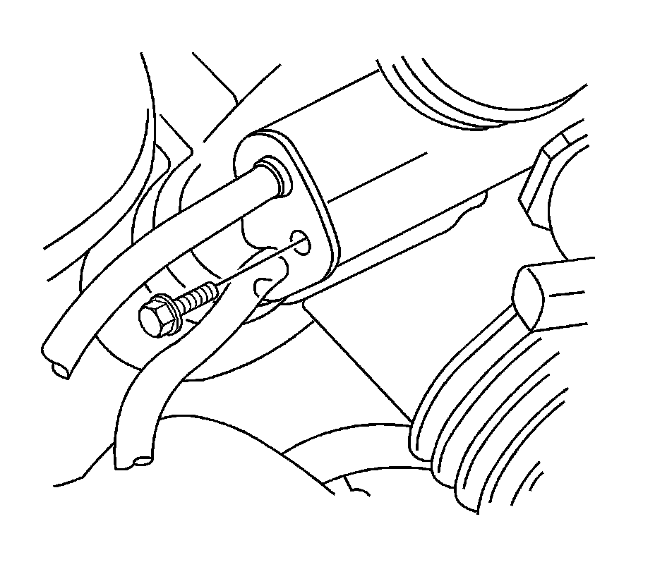
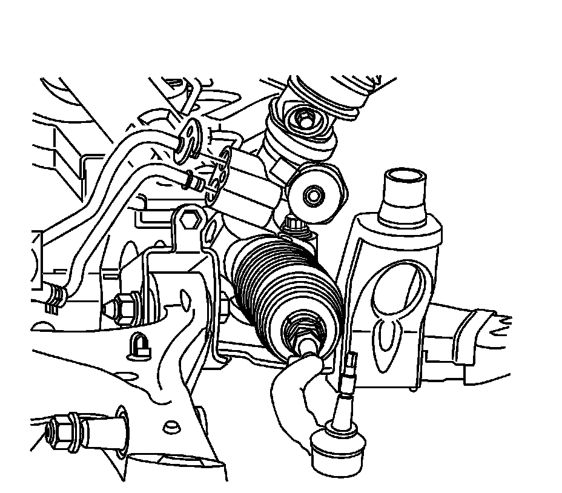
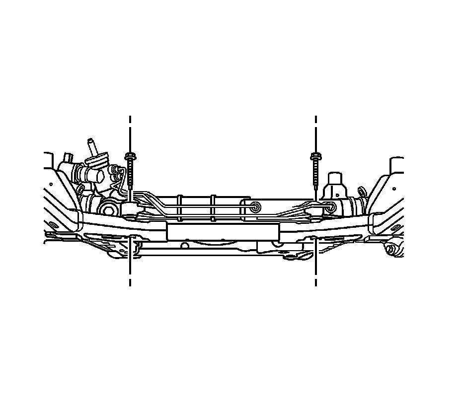

Steering Gear Replacement (Left Hand Drive)
Steering Gear Replacement (Left Hand Drive)
Tools Required
J 42640 Steering Column Anti-Rotation Pin
Removal Procedure
1. Turn the steering wheel so that the front wheels are pointing straight ahead.
2. Turn the ignition lock cylinder to the lock position and remove the ignition key.

3. Insert anti-rotation pin J 42640 into the steering column access hole in order to lock the steering column.
4. Remove the front tire and wheel assemblies. Refer to Tire and Wheel Removal and Installation (Service and Repair) .
5. Remove the left side wheelhouse panel. Refer to Wheelhouse Panel Replacement - Left Side (Service and Repair) .
6. Remove the front air deflector. Refer to Front Air Deflector Replacement (Service and Repair) .
7. Place drain pans under the vehicle as needed.

Caution: Failure to disconnect the intermediate shaft from the rack and pinion stub shaft can result in damage to the steering gear and/or intermediate shaft. This damage can cause loss of steering control which could result in personal injury.
Notice: The wheels of the vehicle must be straight ahead and the steering column in the LOCK position before disconnecting the steering column or intermediate shaft from the steering gear. Failure to do so will cause the coil assembly in the steering column to become uncentered which will cause damage to the coil assembly.
8. Remove the lower intermediate steering shaft bolt.
9. Disconnect the lower intermediate steering shaft from the steering gear.
10. Separate the rack and pinion outer tie rod ends from the steering knuckles. Refer to Rack and Pinion Outer Tie Rod End Replacement (Service and Repair) .

11. Remove the power steering gear inlet hose bracket bolt.

12. Disconnect the power steering gear inlet and outlet hoses from the steering gear.
13. Disconnect and plug the left front brake line from the left front brake hose.

14. If equipped with all wheel drive (AWD), use a suitable jack and support the bottom of the front differential housing.

15. If equipped with AWD, loosen the right engine mount nut.
16. If equipped with AWD, raise the front differential housing to clear the steering gear bolt.

17. Remove the steering gear bolts.
18. Remove the rearward left side lower control arm nut and bolt.
19. Remove the steering gear through the left wheel opening.
Installation Procedure
1. Install the steering gear through the left wheel opening.
2. Install the rearward left side lower control arm nut and bolt.
Notice: Refer to Fastener Notice (Fastener Notice) .
3. Remove the steering gear bolts.
Tighten the bolts to 180 N.m (133 lb ft).
4. If equipped with AWD, lower the front differential housing.
5. If equipped with AWD, tighten the right engine mount nut.
Tighten the nut to 80 N.m (59 lb ft).
6. If equipped with all wheel drive (AWD), remove the jack from the front differential housing.
7. Connect the left front brake line to the left front brake hose.
Tighten the line to 27 N.m (20 lb in).
8. Connect the power steering gear inlet and outlet hoses to the steering gear.
9. Install the power steering gear inlet hose bracket bolt.
Tighten the bolt to 23 N.m (17 lb ft).
10. Connect the rack and pinion outer tie rod ends to the steering knuckles. Refer to Rack and Pinion Outer Tie Rod End Replacement (Service and Repair) .
11. Connect the lower intermediate steering shaft to the steering gear.
12. Install the lower intermediate steering shaft bolt.
Tighten the bolt to 50 N.m (37 lb ft).
13. Clean any excess power steering fluid from the vehicle and remove the drain pans.
14. Install the front air deflector. Refer to Front Air Deflector Replacement (Service and Repair) .
15. Install the left side wheelhouse panel. Refer to Wheelhouse Panel Replacement - Left Side (Service and Repair) .
16. Install the front tire and wheel assemblies. Refer to Tire and Wheel Removal and Installation (Service and Repair) .
17. Remove the anti-rotation pin J 42640 .
18. Fill and bleed the power steering system. Refer to Power Steering System Bleeding (Service and Repair) .
19. Fill and bleed the hydraulic brake system. Refer to Hydraulic Brake System Bleeding (Pressure) (Service and Repair)Hydraulic Brake System Bleeding (Manual) (Service and Repair) .
20. Adjust the front toe. Refer to Front Toe Adjustment (Service and Repair) .